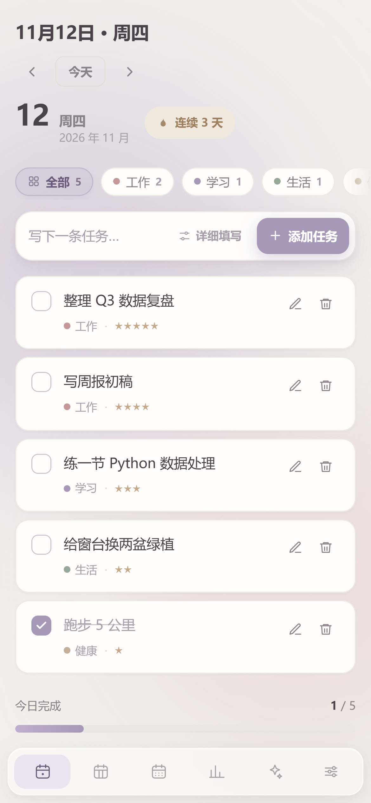
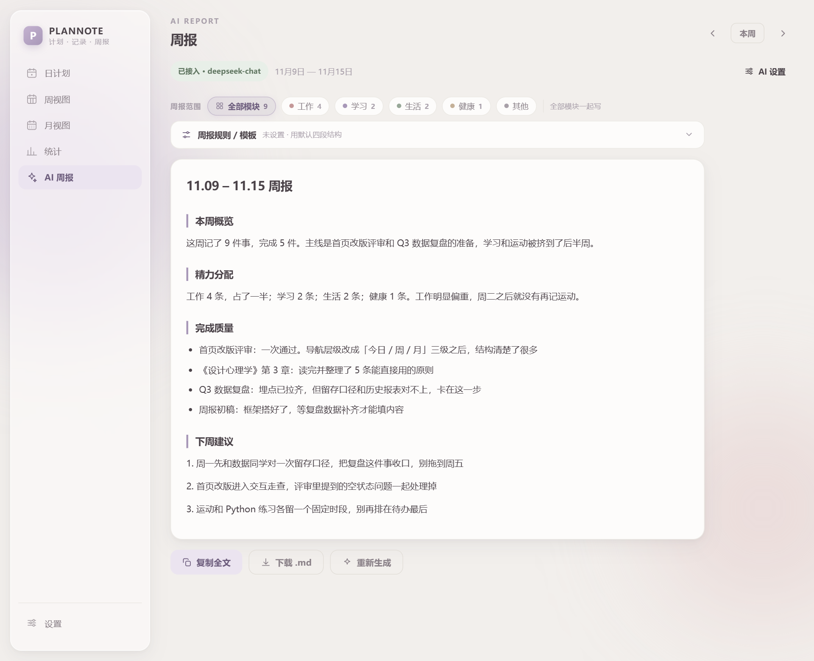

想不起做过什么
一周五天，记得清楚的往往只有周一和今天。剩下的要去翻群聊、翻邮件、翻自己发过的文件，翻完其实还是拼不出完整的一件事。
个人计划本 · 纯前端 · 不联网也能记
这是我给自己做的计划本，记的时候一条就一句话。到周五，它把这一周理成一份周报， 格式按你们公司那套来。不过没有账号，也不用注册，写下来的东西只存在你自己的浏览器里，我这边看不到。
不用登录 · 能装到桌面和手机 · 断网照记

打开文档，光标闪半天，脑子里一片空白，然后开始翻聊天记录，找自己到底说过什么。
一周五天，记得清楚的往往只有周一和今天。剩下的要去翻群聊、翻邮件、翻自己发过的文件，翻完其实还是拼不出完整的一件事。
待办在备忘录，结果在群里，到底花了多久只有我自己知道。凑一次要半小时，写出来三行。
「积极推进」「持续跟进」「高度重视」，这些词不是不会写，是写出来我自己都不太信。看的人大概也看得出来。
大部分计划工具想帮你自律：提醒、打卡、完成率、连续几天。这些它一样都不做。 它更像一个放原料的地方，今天做了什么，顺手丢一句进去，不用分类也不用打分，等周五再一起处理。
所以它的第一条原则是，记一条不能比发一条消息更麻烦。打开就是今天，输入框就在那儿， 一句话按回车就完事，模块和优先级想不起来就空着，之后再补。剩下的都压到周五那一次去解决。
这个想法其实是被逼出来的。最早它是 Python 写的桌面版，只能在自己电脑上开， 想在工位记一句得先回去开电脑，用起来就不顺手。搬到网页之后才真的能用起来， 顺带把功能删掉了一批，没有项目管理，没有多人协作，也没有甘特图。
它也不要求你每天都记。有时候一天下来什么都不想写，就空着，第二天补一句。 不弹窗催，也不去算你断了几天打卡，这大概就是我要的东西：一个不催人的本子。
没有项目管理，没有多人协作，也没有甘特图。三个视图读的是同一批数据，不做二次录入。
只写一句话也可以保存，模块、优先级、时间都支持之后补填。日、周、月三个视图读取同一批数据，不需要重复录入。

把公司模板、格式要求或历史样例粘进「周报规则」，生成时优先于默认结构。标题、小节、落款按规则输出，不需要每次手动修改。

没有账号系统，也没有云端数据库。记录保存在浏览器的本地数据库中，换一个浏览器或换一台设备打开，看到的是空数据。

真实接口跑出来的，喂进去的只有九条任务记录，一个字没改。 整齐得有点出乎我意料，但也有几处读着还是像机器写的，我没有去润色。

手机上可以左右滑动，看完整份
AI 周报要填一个你自己的 API Key（OpenAI 兼容的接口都行）。 剩下那些，记录、视图、统计、备份，打开就能用，不用联网。
这部分大概只有同行会看：为什么这么选，代价是什么。